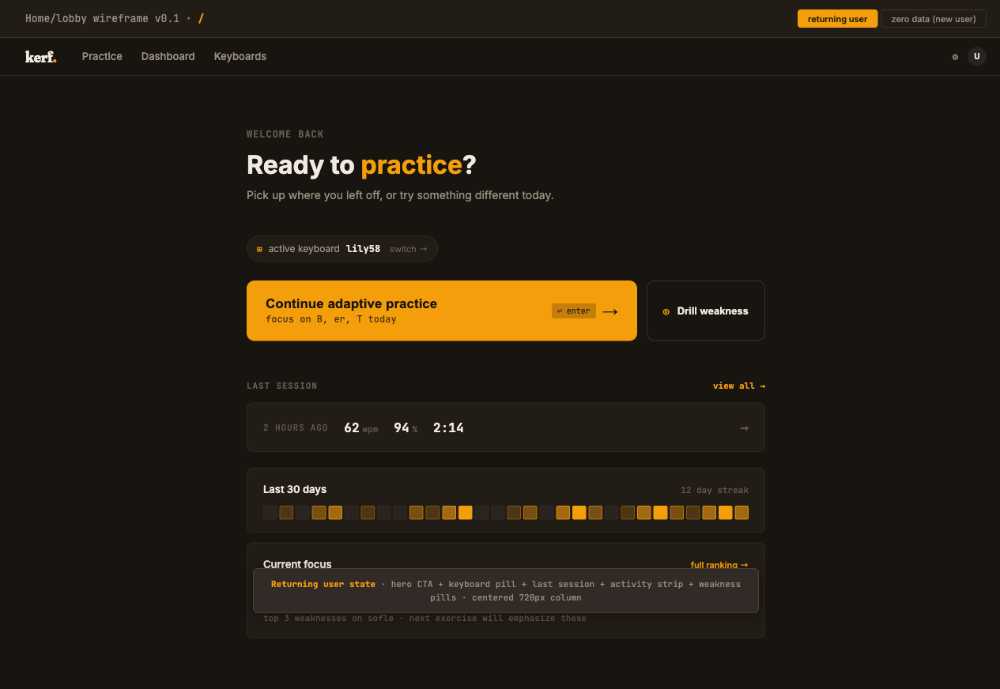
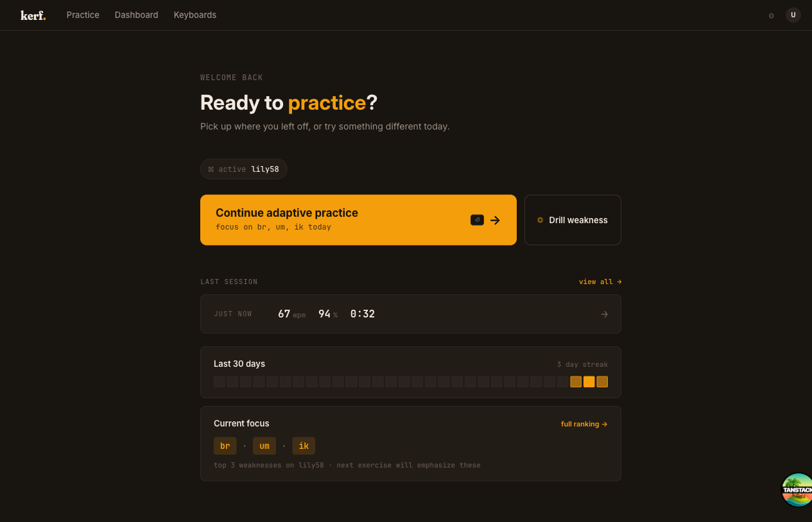
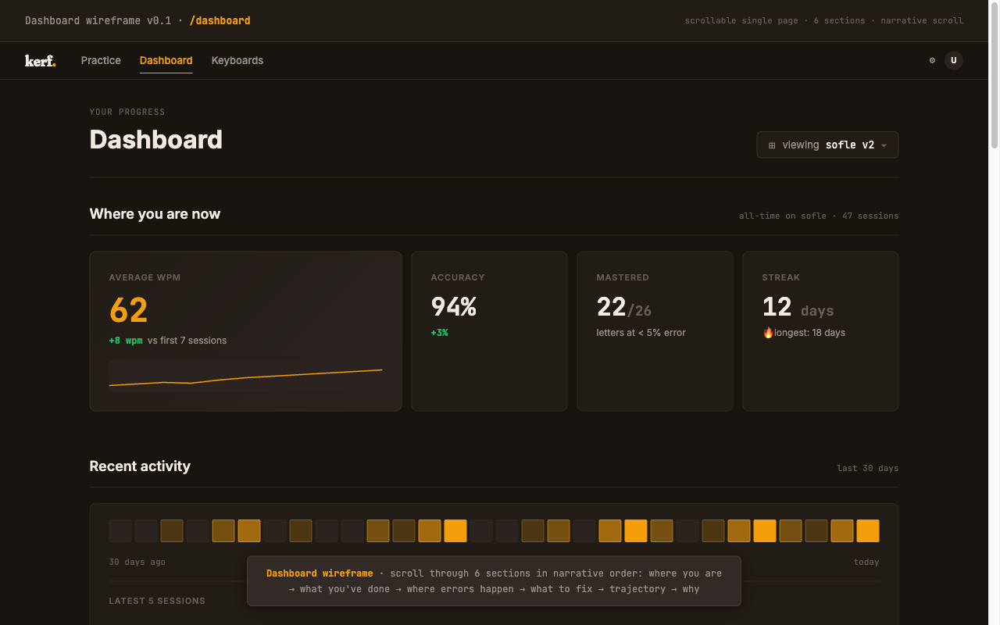
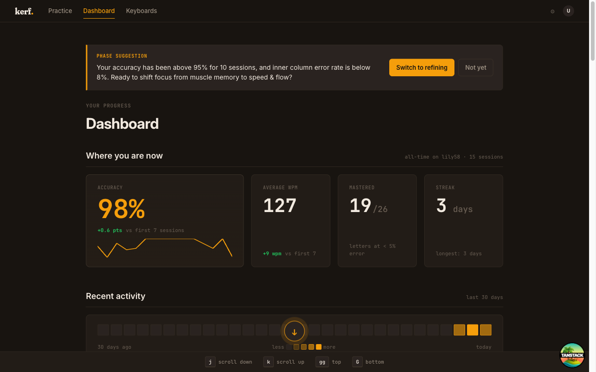
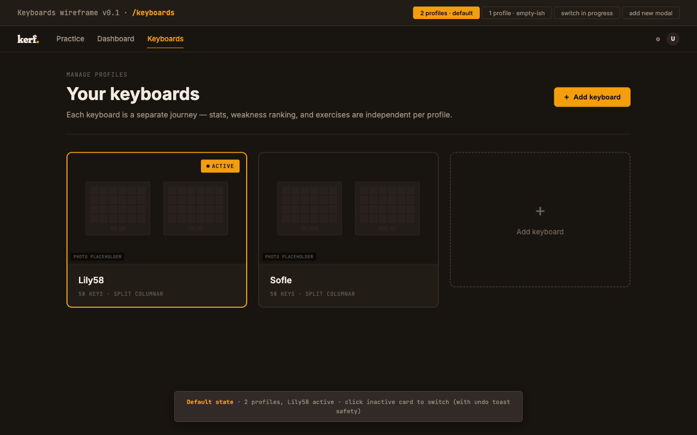
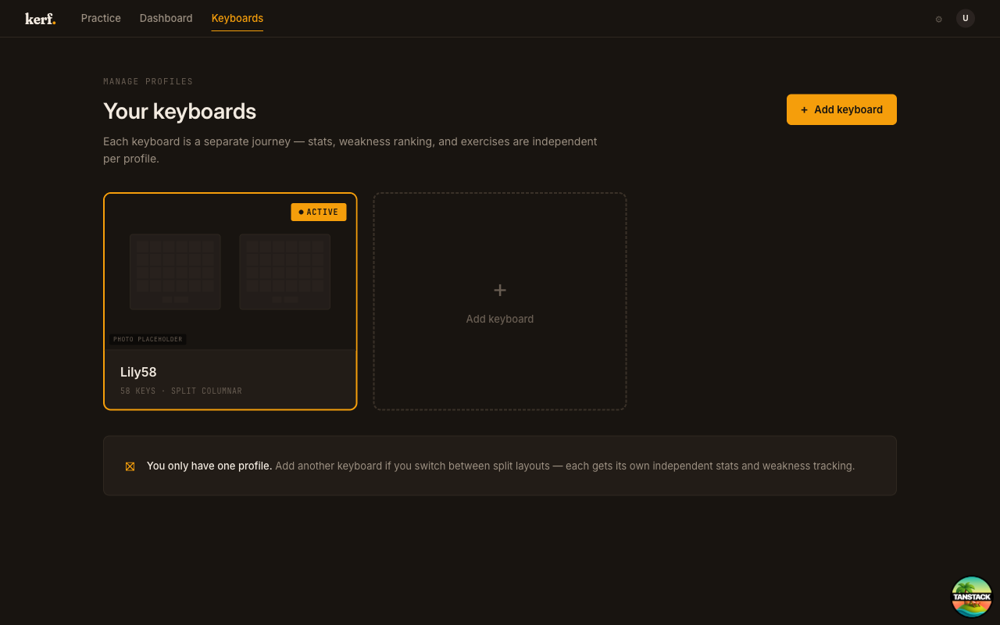
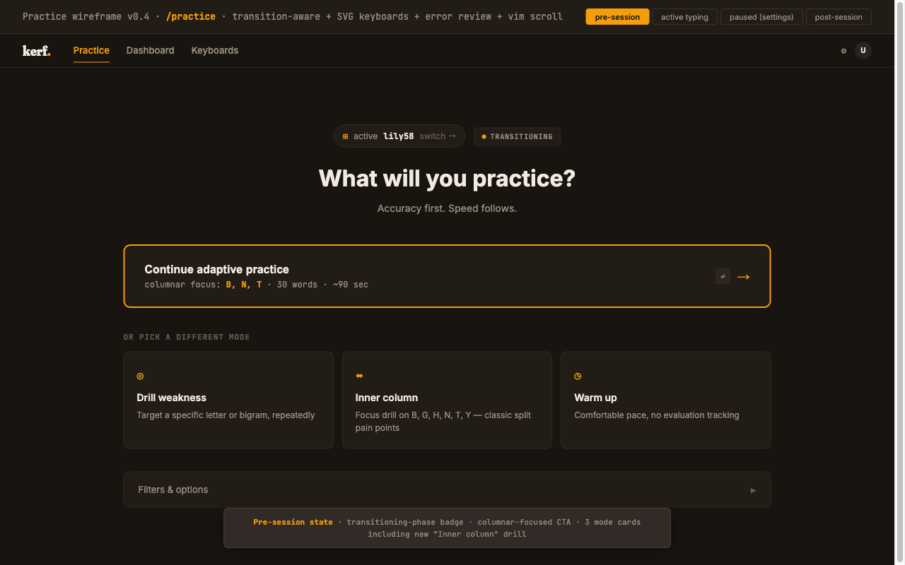
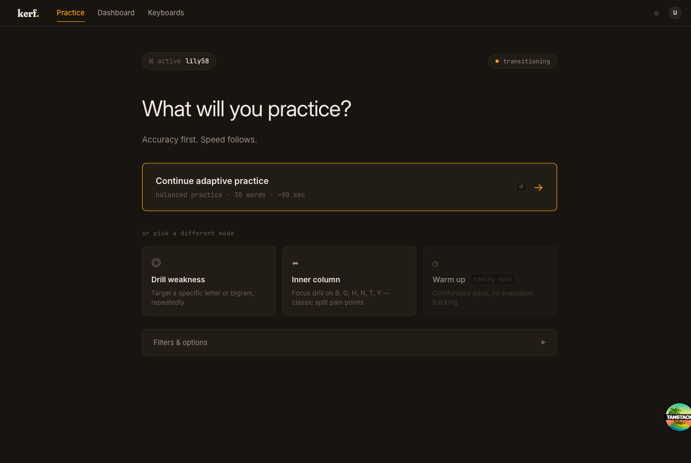

A structured Claude Code workflow — specs before code, decisions as ADRs, subagent-driven TDD, visual audits.
kerf has a docs/ folder before it has a working build. Product spec, technical architecture, information architecture, design system, task breakdown — written, revised, and committed as living documents. Decisions are visible artifacts, not tribal knowledge.
The discipline matters more than the tool. A spec you can read, link, and amend is a spec you can argue with. A spec that lives only in conversation is one that drifts the moment the conversation ends.
Every meaningful product or architectural pivot lives in a design-evolution log as a numbered ADR. Cost, motivation, and downstream impact are captured at the time of the decision, not reconstructed later from git blame.
The clearest example: ADR-003. Mid-build, the product reframed from "generic typing platform with split-keyboard support" to "deliberate-practice platform for split-keyboard transition." That change added six to nine weeks of work, introduced a new session_targets table, added journey-aware scoring to the weakness model, and inserted a target-selection engine layer above the existing exercise generator.
The ADR was written before any of those changes were implemented. The architecture spec was updated. Then the code followed. Re-spec, then re-code — never the reverse.
The 18-to-26-week build is broken into phases, and each phase produces something demo-able. No big-bang integration. The first phase that runs onboarding doesn't need a working engine; the first phase with an engine doesn't need polished UI. The phases compose, but each one is shippable in isolation.
Solo development without milestone discipline turns into a perpetually-90%-done branch. The discipline isn't about velocity. It's about always having something that works.
Implementation runs through Claude Code subagents — fresh context per task, isolated changes, tests-first. The structure is what makes the model's output coherent across months: every task starts with a failing test, ends with a passing one, and gets reviewed before merge.
The model is the typist. I am the architect, the reviewer, and the person responsible for the result. The subagent doesn't decide what good looks like; it executes against a spec that does.
Visual audits compare rendered implementation against the design wireframes systematically — not vibes-based "looks fine," but a structured side-by-side check on every primary screen. Wireframe on the left, live implementation on the right.








ADR-003 was the largest re-spec, but not the only one. Whenever implementation surfaced something the model missed — an unhandled phase transition, a journey case that broke the resolver, a UI affordance that contradicted a stated value — the docs were updated first, then the code. The doc tree is the source of truth. The codebase is the realization of the doc tree.
This is the inversion of "code is the spec." Code lies; specs are read. When the spec is the artifact people argue with, you get a different shape of conversation, and a different shape of product.
This is not "I prompted Claude into a working app." kerf has a 22 KB product spec, a 53 KB architecture document, a 41 KB task breakdown, and a 91 KB design-evolution log. None of those documents exist by accident. They are the work.
What changes with AI as leveraged tooling: the typing speed of implementation, the willingness to write a failing test before the function exists, the patience for refactoring when the spec shifts. What does not change: the responsibility for taste, for architecture, for whether the product is worth shipping at all.
The workflow above is what made AI assistance compound across a real product instead of dissolve into demo-ware. It's the discipline that scales, not the tool.